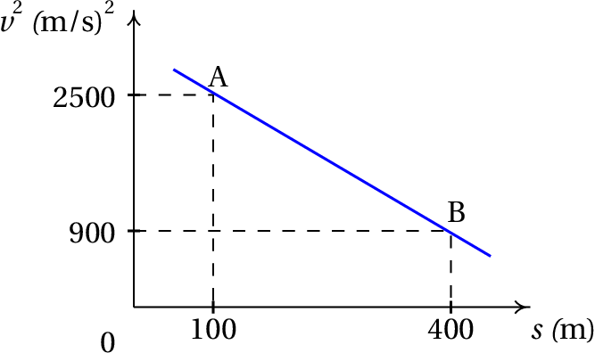

A expressão da aceleração tangencial de um objeto é m/s2. Se em , m/s e a posição na trajetória é , determine a velocidade e a posição em s e a distância total percorrida, ao longo da trajetória, entre e s.
Para calcular a velocidade em , substitui-se a expressão da aceleração constante na equação que relaciona a aceleração com a velocidade e o tempo
Separando variáveis e integrando, encontra-se a velocidade em
Para calcular a posição final, substitui-se a expressão da aceleração constante na equação que relaciona a aceleração com a velocidade e a posição
Separando variáveis e integrando,
O valor negativo da velocidade final quer dizer que o objeto deslocou-se até um ponto onde parou e em está de regresso na direção da origem. Para calcular a distância total percorrida é necessário determinar a posição do ponto onde parou
Como tal, o objeto deslocou-se desde até m e depois deslocou-se outros 8 metros até m. A distância total percorrida foi então 80 m.
Em , um objeto encontra-se em repouso na posição cm num percurso. A partir desse instante o objeto começa a deslocar-se no sentido positivo de , parando novamente num instante . A expressão da aceleração tangencial, entre e , é: , onde o tempo mede-se em segundos e a aceleração em cm/s2. Determine: (a) O instante em que o objeto volta a parar. (b) A posição no percurso nesse instante.
A expressão dada para a aceleração tangencial em função do tempo pode ser substituída na equação cinemática , conduzindo a uma equação diferencial de variáveis separáveis:
com variáveis e . Separando as variáveis, integrando desde 0 até e integrando desde zero até zero novamente, obtém-se a seguinte expressão
que pode ser resolvida no Maxima
O objeto volta a parar então em s.
Para calcular a posição em função do tempo, é necessário saber a expressão da velocidade em função do tempo, que pode ser obtida separando variáveis novamente na equação , mas deixando os limites superiores como variáveis e .
E resolvendo os integrais encontra-se a expressão de em função de
Substitui-se essa expressão na equação cinemática , conduzindo a uma equação de variáveis separáveis:
Separando variáveis, integrando desde até e desde a posição inicial até a posição final obtém-se
E o valor de determina-se resolvendo os integrais
A posição final do objeto é cm.
A expressão da aceleração tangencial de um objeto que oscila numa calha é , onde é uma constante positiva. Determine:
(a) O valor de para que a velocidade seja m/s em e em m.
(b) A velocidade do objeto em m.
A expressão da aceleração tangencial permite resolver a seguinte equação
Separando variáveis e integrando entre os dois valores de e de dados, obtém-se o valor da constante (unidades SI)
Para calcular a velocidade em , resolvem-se os mesmos integrais, mas agora o valor de é conhecido e a variable desconhecida é a velocidade em
Os valores positivos e negativos de são devidos a que, como a partícula oscila, passa muitas vezes por , umas vezes no sentido positivo e outras vezes no sentido negativo.
O quadrado da velocidade de um objeto diminui linearmente em função da posição na sua trajetória, , tal como se mostra no gráfico. Calcule a distância percorrida durante os dois últimos segundos antes do objeto chegar ao ponto B.
Encontra-se a equação da reta, usando os dois pontos dados no gráfico e tendo em conta que a variável no eixo das abcissas é e a variável no eixo das ordenadas é
Como o enunciado diz que a velocidade diminui, então o objeto desloca-se de A para B e a sua velocidade é positiva. A expressão para em ordem a é então a raiz positiva do lado direito na equação anterior:
Substituindo na equação , obtém-se uma equação diferencial de variáveis separáveis
Para separar variáveis, a expressão no lado esquerdo passa a dividir ao lado direito:
Dois segundos antes de chegar ao ponto B, o objeto encontra-se num outro ponto C, onde podemos arbitrar igual a zero. Como tal, a variável t será integrada desde 0 até 2 e a variável desde até 400
A distância percorrida nos últimos dois segundos antes de chegar a B, é . O resultado %o7 pode substituir-se nessa expressão para obter a distância
A resposta é 65.33 m.